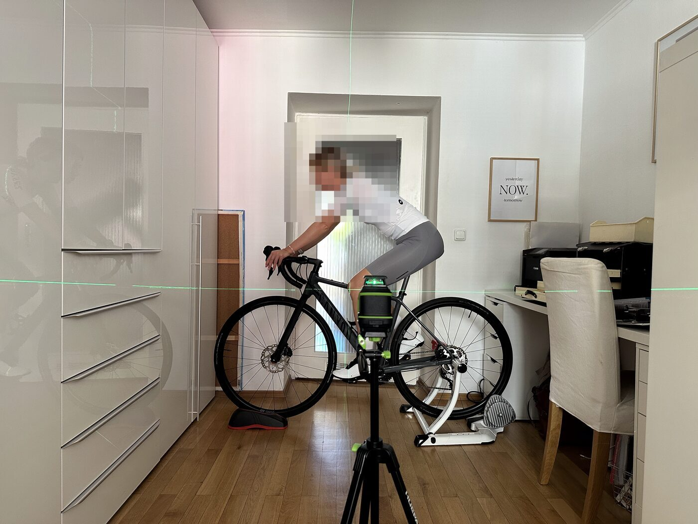
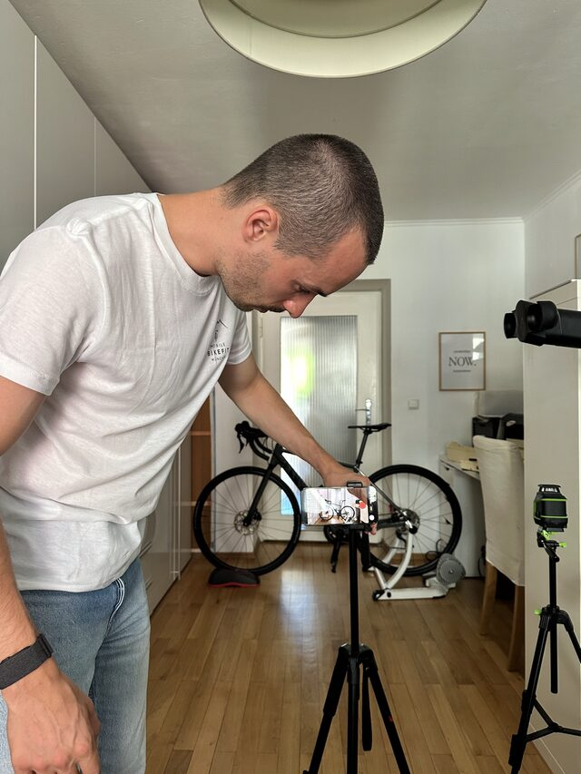
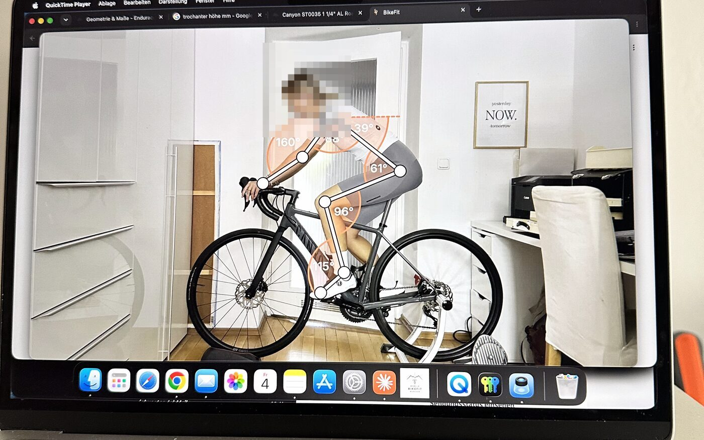
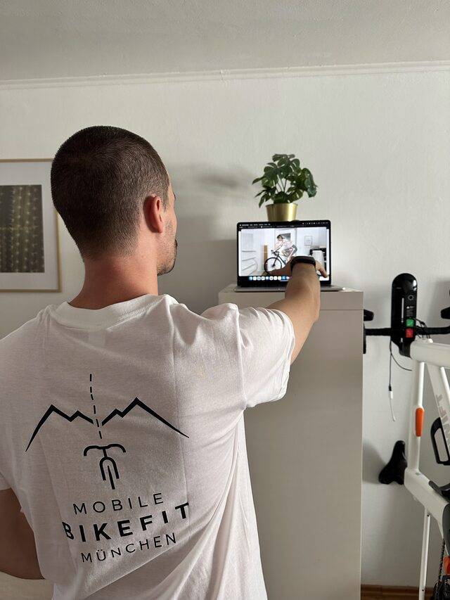
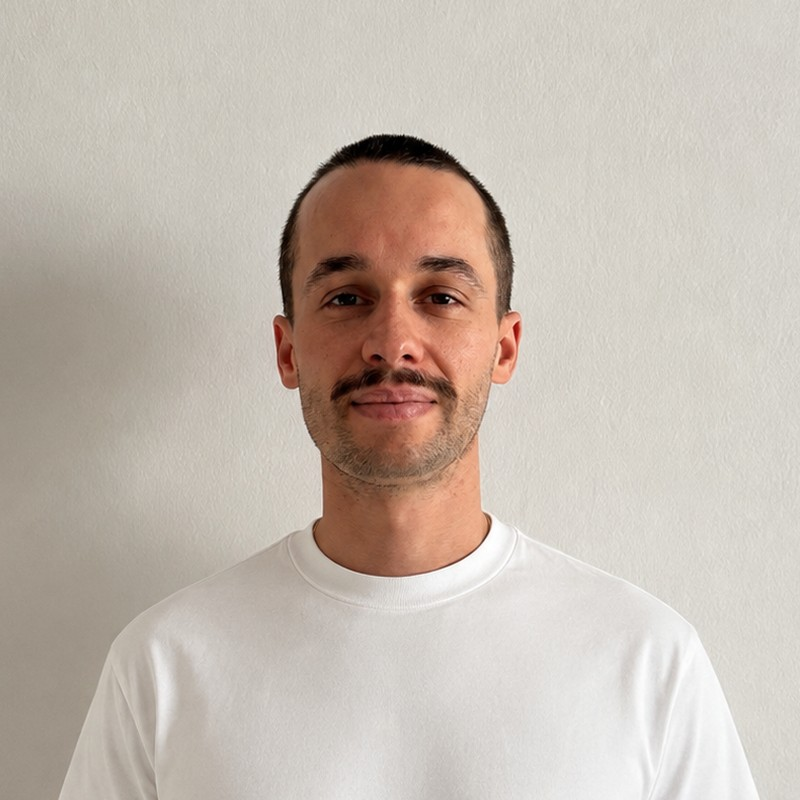

Bike Fitting · Rennrad & Gravel
Bike Fitting bei dir zuhause. Gemessen, nicht geschätzt.
Ich komme mit Rolle, Kamera und Werkzeug zu dir nach München, analysiere deine Sitzposition per Video und stelle dein Rennrad oder Gravelbike direkt ein – mit Kontrollvideo und Report.
199 € · ca. 90 Minuten · München Stadtgebiet · Rennrad & Gravel


Drei gute Gründe, deine Position messen zu lassen
Es zwickt.
Knie, Rücken, Nacken, taube Hände, Sitzprobleme – meistens sitzt nicht der Fahrer falsch, sondern das Rad ist falsch eingestellt.
Neues Rad oder neue Teile.
Sattel, Lenker, Kurbel, Cleats – jede Änderung verschiebt die Position. Einmal sauber einstellen statt monatelang probieren.
Länger und effizienter fahren.
Eine Position, die zu deinem Ziel passt – Komfort auf der Langstrecke oder Effizienz im Wettkampf – ohne dass du dafür etwas kaufen musst.
So läuft ein Fitting ab
ca. 90 Minuten bei dir zuhause
-
Gespräch & Vermessung
Was fährst du, was zwickt, was ist dein Ziel? Dazu Sitzknochen- und Körpervermessung, inklusive Schulterbreite (Akromion) für die passende Lenkerbreite.
-
Video auf der Rolle
Dein Rad kommt auf meinen Trainer, du fährst ein paar Minuten, die Kamera filmt seitlich.
-
Analyse
Aus dem Video werden Knie-, Hüft-, Rücken- und Ellbogenwinkel gemessen und mit wissenschaftlich fundierten Zielbereichen verglichen – angepasst an dein Ziel, nicht nach Faustformel.
-
Einstellen
Sattelhöhe und -position, Lenker, Vorbau und Bremsgriffe – direkt am Rad, mit Drehmomentschlüssel. Cleats werden mit Schablone eingestellt, inklusive deiner Fußstellung (Veranlagung), nicht nur „mittig“.
-
Kontrollvideo & Report
Kontrollvideo, Vorher/Nachher im Vergleich. Du bekommst den Report mit deinen Winkeln, den Einstellwerten und dem Video mit Winkel-Overlay.


Was du brauchst
Nur dein Rad. Rolle, Kamera, Stativ, Laptop und Werkzeug bringe ich mit.
- dein Rennrad oder Gravelbike, fahrbereit
- Radschuhe und enge Radkleidung – damit die Videoanalyse deine Gelenke sauber erkennt
- etwa 2 × 3 m Platz
Preise
Bike Fitting
199 €
Rennrad oder Gravel · ca. 90 Minuten bei dir zuhause · Sitzknochen-, Körper- und Schulterbreiten-Vermessung (Lenkerbreiten-Empfehlung) · Videoanalyse und Einstellung von Sattel, Lenker, Vorbau, Bremsgriffen · Cleat-Einstellung mit Schablone inkl. Fußstellung · Kontrollvideo · Report mit Winkel-Overlay · Anfahrt in München inklusive
Einführungspreis
149 € für die ersten 10 Fittings – gegen eine ehrliche Google-Bewertung. Noch 10 von 10.
Endpreise, keine Umsatzsteuer gemäß § 19 UStG. Umland auf Anfrage (Anfahrt nach Aufwand). Kostenlose Absage bis 24 h vor dem Termin, danach 49 € Ausfallpauschale. Bezahlung bar, per Überweisung oder Karte vor Ort. Gutschein auf Anfrage.

Armin Sedlmeyr
Ingenieur, Data Scientist – und seit 2023 auf dem Rennrad.
Das Analyse-Tool, mit dem ich deine Position messe, habe ich selbst gebaut: gemessene Gelenkwinkel gegen Zielbereiche aus der Fachliteratur, statt Faustformeln.
Mobile BikeFit München ist neu; ich fitte im Nebenberuf, mit Zeit für jeden Termin.
Häufige Fragen
Was brauche ich?
Nur dein Rad, Radschuhe und enge Radkleidung. Rolle und alles andere bringe ich mit.
Wie lange dauert es?
Etwa 90 Minuten – inklusive Aufbau, Videos und Einstellen.
Muss ich Teile kaufen?
Meistens nicht. Sattelhöhe, Sattelposition, Lenkerhöhe, Bremsgriffe und Cleats lassen sich mit dem vorhandenen Material einstellen. Wenn ein anderer Vorbau, eine andere Lenkerbreite oder Kurbellänge sinnvoll wäre, sage ich dir das mit Zahlen – kaufen musst du nichts.
Und wenn es danach nicht passt?
Änderungen brauchen ein paar Fahrten Gewöhnung. Wenn sich etwas nicht gut anfühlt, meld dich einfach bei mir – wir finden heraus, wo es zwickt.
Auch für Einsteiger?
Gerade dann. Die meisten Beschwerden entstehen in den ersten Monaten, weil das Rad so eingestellt ist, wie es im Laden stand.
Wie bist du dazu gekommen?
In meinen ersten Jahren auf dem Rennrad hatte ich ungefähr alles, was wehtun kann: Knieprobleme, taube Hände, eingeschlafene Füße, Sitzbeschwerden. Von Orthopädie zu Neurologie. Nachhaltig geholfen hat am Ende immer eine Positionsoptimierung auf dem Rad – mittlerweile klappen auch Klassiker wie München–Gardasee ohne Probleme.
Dabei ist mir aufgefallen, wie weit die Methoden auseinandergehen. Manche rechnen die Position allein aus Körpermaßen aus, auf feste Punkte statt auf Bereiche – ohne zu fragen, was du mit dem Rad vorhast. Ich wollte wissen, was davon trägt. Deshalb das eigene Tool.
Ich bin weder Arzt noch Physiotherapeut. Bei anhaltenden Beschwerden gehört das ärztlich abgeklärt.
Wie bezahle ich?
Bar, per Überweisung oder mit Karte vor Ort. Rechnung bekommst du per E-Mail.
Termin anfragen
Schreib mir kurz, welches Rad du fährst, was dich stört und wann es dir passt – ich melde mich am selben Tag.